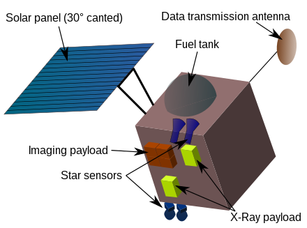

CHANDRAYAAN-1
The Chandrayaan-1 program, operated by the Indian Space Research Organisation (ISRO), launched its initial
lunar probe in October 2008, which marked India's debut Moon mission. India launched a spacecraft called Chandrayaan to explore the Moon in 2008. The spacecraft had two parts, an
orbiter and a probe. The Moon Impact Probe, which was part of the probe, separated from the orbiter and hit
the Moon's south pole in a controlled manner on 14 November 2008. This made India the fourth country to put
its flag on the Moon.

Diagram Of Chandrayaan-1
Launch:
The spacecraft, which consisted of a
lunar orbiter and an impactor, was launched into space from Sriharikota, Andhra Pradesh, using a PSLV-XL
rocket at 00:52 UTC on 22 October 2008. After its launch, the probe operated for nearly a year, until August
2009, during which it successfully entered the Moon's orbit on 8 November 2008. This mission was a
significant milestone for India's space program, as it utilized home-grown technology to explore the Moon.
 PSLV-C11 Launch Vehicle Of Chandrayaan-1
PSLV-C11 Launch Vehicle Of Chandrayaan-1
Cost:
The project cost around 48 million US dollars and was meant to last for two years. The
aim was to study the Moon's surface and create a map of its composition and topography. One important
discovery was that there is water on the Moon. The mission ended after almost a year due to technical
issues. The spacecraft stopped communicating in August 2009, and the mission was declared over.
Goals:
In order to reach its objective, the mission defined these goals:
● High-resolution mineralogical and chemical imaging of the permanently shadowed north- and south-polar
regions.
● Searching for surface or sub-surface lunar water-ice, especially at the lunar poles.
● Identification of chemicals in lunar highland rocks.
● Chemical stratigraphy of the lunar crust by remote sensing of the central uplands of large lunar
craters, and of the South Pole Aitken Region (SPAR), an expected site of interior material.
● Mapping the height variation of features of the lunar surface.
● Observation of X-ray spectrum greater than 10 keV and stereographic coverage of most of the Moon's
surface with 5 m (16 ft) resolution.